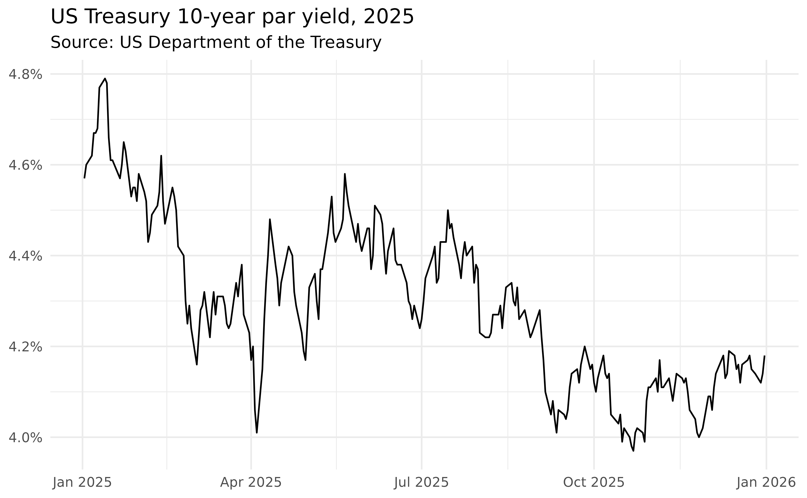

treasury gives you a simple, modern interface to US Treasury data. It covers both the daily interest rate XML feed and the historical Treasury coupon issues and corporate bond yield curves.
Every function is prefixed with tr_, follows the naming
convention of the upstream feed, and returns a tidy
data.table.
Daily interest rates
The interest rate functions all share the same date
argument: pass a year as yyyy, a month as
yyyymm, or leave it NULL to download the full
history. The daily par yield curve is the most commonly used:
yield_curve = tr_yield_curve(2025)
head(yield_curve)
#> date maturity rate updated_at
#> <Date> <char> <num> <POSc>
#> 1: 2025-01-02 1 month 4.45 2026-06-26 15:50:13
#> 2: 2025-01-02 2 month 4.36 2026-06-26 15:50:13
#> 3: 2025-01-02 3 month 4.36 2026-06-26 15:50:13
#> 4: 2025-01-02 4 month 4.31 2026-06-26 15:50:13
#> 5: 2025-01-02 6 month 4.25 2026-06-26 15:50:13
#> 6: 2025-01-02 1 year 4.17 2026-06-26 15:50:13The remaining interest rate functions follow the same pattern:
tr_bill_rate(2025) # secondary market treasury bill rates
tr_long_term_rate(2025) # 20- and 30-year long-term rates
tr_real_yield_curve(2025) # par real yield curve (TIPS)
tr_real_long_term(2025) # long-term real rate averagesEach call returns a long-format table with a date
column, a label column (maturity or type), and
the corresponding rate/value.
Historical yield curves
The Treasury also publishes historical coupon-issue and corporate
bond yield curves as Excel files. These are exposed through
tr_curve_rate(), tr_par_yield(), and
tr_forward_rate(). The first argument selects the curve
("hqm", "tnc", "trc", or
"tbi"), and type selects
"monthly" or "end-of-month" data:
tr_curve_rate("tbi") # breakeven inflation curve breakeven rates
tr_par_yield("tnc") # TNC par yields, monthly average
tr_forward_rate("trc", "end-of-month") # TRC forward rates, end of monthThese functions require the readxl package
(install.packages("readxl")).
Plotting
Because every function returns a tidy table, the results plug directly into ggplot2. For example, the 10-year par yield over 2025:
library(ggplot2)
subset(yield_curve, maturity == "10 year") |>
ggplot(aes(date, rate)) +
geom_line() +
scale_y_continuous(labels = scales::label_percent(scale = 1L)) +
theme_minimal() +
theme(axis.title = element_blank()) +
labs(title = "US Treasury 10-year par yield, 2025", subtitle = "Source: US Department of the Treasury")
Caching
treasury can cache API responses on disk, so re-running a query is instant and you avoid hammering the upstream feed. Caching is off by default; enable it with:
options(treasury.cache = TRUE)Put that line in your .Rprofile to enable caching for
every session. Cached responses are kept for one day by default; tune
this with
options(treasury.cache_max_age = <seconds>). Inspect
or clear the cache with:
tr_cache_dir() # where responses are stored
tr_cache_clear() # wipe the cacheWhere to go next
- The function reference lists every available endpoint.
- Each help page documents the relevant data source and links to the official Treasury page.